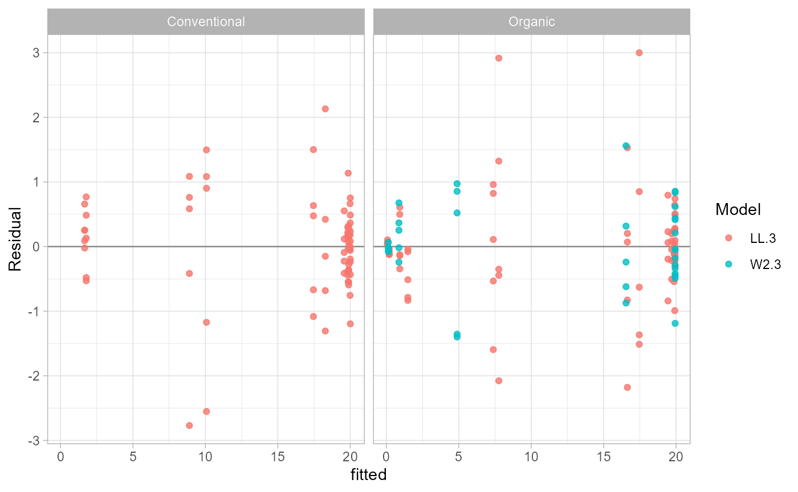

Get started with EC50 workflows
Kaique S Alves
2026-05-24
Source:vignettes/get-started.Rmd
get-started.RmdGoal
This article shows the recommended workflow for most users:
- Check the data before fitting.
- Fit candidate dose-response models.
- Inspect model quality and failed fits.
- Choose the best-supported model within each isolate and stratum.
- Plot fitted curves and export a reporting table.
The package keeps the fitted result as a data frame, but it also stores the model metadata needed for plotting, prediction, diagnostics, and reporting.
Example Data
multi_isolate is a simulated mycelial-growth dataset
with repeated dose measurements for fungal isolates. The examples use a
small subset so the workflow is easy to inspect.
data(multi_isolate)
example_data <- subset(
multi_isolate,
isolate %in% 1:5 & fungicida == "Fungicide A"
)
head(example_data)## isolate field fungicida dose growth
## 1 1 Organic Fungicide A 0e+00 20.2082399
## 2 1 Organic Fungicide A 1e-05 20.1168279
## 3 1 Organic Fungicide A 1e-04 19.2479678
## 4 1 Organic Fungicide A 1e-03 15.8123455
## 5 1 Organic Fungicide A 1e-02 7.3206757
## 6 1 Organic Fungicide A 1e-01 0.6985264Check the Data
Run check_ec50_data() before fitting. It returns one row
per isolate and stratum, with flags for common problems such as missing
values, too few doses, nonpositive doses for log-scale plots, and
response groups with no variation.
data_check <- check_ec50_data(
example_data,
response = "growth",
dose = "dose",
isolate = "isolate",
strata = "field"
)
data_check## ID field n_obs n_doses missing_response missing_dose nonpositive_dose
## 1 1 Organic 35 7 0 0 5
## 2 2 Conventional 35 7 0 0 5
## 3 3 Organic 35 7 0 0 5
## 4 4 Conventional 35 7 0 0 5
## 5 5 Organic 35 7 0 0 5
## duplicated_rows no_response_variation too_few_observations too_few_doses
## 1 0 FALSE FALSE FALSE
## 2 0 FALSE FALSE FALSE
## 3 0 FALSE FALSE FALSE
## 4 0 FALSE FALSE FALSE
## 5 0 FALSE FALSE FALSENonpositive dose values are flagged because log-scaled curves cannot
draw them. They can still be useful as untreated controls, but they are
omitted from the log-scale prediction grid used by
plot_EC50_curves().
Fit Candidate Models
Use ec50_multimodel() when you want to compare more than
one drc model. The same model list is fitted within each
isolate and field stratum.
fit <- ec50_multimodel(
growth ~ dose,
data = example_data,
isolate_col = "isolate",
strata_col = "field",
fct = list(drc::LL.3(), drc::LL.4(), drc::W2.3()),
interval = "delta"
)
head(fit)## ID field Estimate Std..Error Lower Upper logLik
## 1 1 Organic 0.006072082 0.0005740341 0.004902813 0.007241351 -45.15079
## 36 2 Conventional 0.101455765 0.0076364691 0.085900787 0.117010744 -43.53183
## 71 3 Organic 0.003776957 0.0002432571 0.003281459 0.004272456 -36.09845
## 106 4 Conventional 0.079971237 0.0055655891 0.068634503 0.091307971 -38.42154
## 141 5 Organic 0.006122508 0.0004575060 0.005190599 0.007054418 -41.41058
## 11 1 Organic 0.006364103 0.0007031475 0.004930024 0.007798182 -44.69257
## IC Lack.of.fit Res.var model
## 1 98.30158 0.7271292 0.8451681 LL.3
## 36 95.06365 0.9866424 0.7704874 LL.3
## 71 80.19689 0.3897432 0.5038400 LL.3
## 106 84.84309 0.8328859 0.5753664 LL.3
## 141 90.82115 0.9744433 0.6825317 LL.3
## 11 99.38515 0.7370811 0.8498845 LL.4The returned object is data-frame-like for compatibility. It also stores the original formula, grouping columns, fitted models, and fit diagnostics.
Inspect Fit Quality
Use fit_quality() to see whether each isolate/model
combination had enough observations and dose levels. Use
fit_failures() to get failed fits as data, instead of
searching warning text.
fit_quality(fit)## ID field model fit_status n_obs n_doses dose_min dose_max
## 1 1 Organic LL.3 ok 35 7 0 1
## 36 2 Conventional LL.3 ok 35 7 0 1
## 71 3 Organic LL.3 ok 35 7 0 1
## 106 4 Conventional LL.3 ok 35 7 0 1
## 141 5 Organic LL.3 ok 35 7 0 1
## 11 1 Organic LL.4 ok 35 7 0 1
## 361 2 Conventional LL.4 ok 35 7 0 1
## 711 3 Organic LL.4 ok 35 7 0 1
## 1061 4 Conventional LL.4 ok 35 7 0 1
## 1411 5 Organic LL.4 ok 35 7 0 1
## 12 1 Organic W2.3 ok 35 7 0 1
## 362 2 Conventional W2.3 ok 35 7 0 1
## 712 3 Organic W2.3 ok 35 7 0 1
## 1062 4 Conventional W2.3 ok 35 7 0 1
## 1412 5 Organic W2.3 ok 35 7 0 1
## response_min response_max message
## 1 0.07631550 20.66667 <NA>
## 36 1.24394259 20.75420 <NA>
## 71 0.06118528 20.78938 <NA>
## 106 1.64277882 20.99232 <NA>
## 141 0.10539854 20.54952 <NA>
## 11 0.07631550 20.66667 <NA>
## 361 1.24394259 20.75420 <NA>
## 711 0.06118528 20.78938 <NA>
## 1061 1.64277882 20.99232 <NA>
## 1411 0.10539854 20.54952 <NA>
## 12 0.07631550 20.66667 <NA>
## 362 1.24394259 20.75420 <NA>
## 712 0.06118528 20.78938 <NA>
## 1062 1.64277882 20.99232 <NA>
## 1412 0.10539854 20.54952 <NA>
fit_failures(fit)## [1] ID field model message
## <0 rows> (or 0-length row.names)Select Models
model_selection() ranks candidate models within each
isolate and stratum. Lower information-criterion values are better. The
delta column measures the difference from the
best-supported model in that group, and weight gives the
relative information-criterion weight.
selection <- model_selection(fit)
selection[, c("ID", "field", "model", "IC", "delta", "weight", "rank")]## ID field model IC delta weight rank
## 1 2 Conventional LL.3 95.06365 0.0000000 0.707505444 1
## 2 2 Conventional LL.4 96.95829 1.8946342 0.274356466 2
## 3 2 Conventional W2.3 102.39112 7.3274622 0.018138091 3
## 4 4 Conventional LL.3 84.84309 0.0000000 0.543149336 1
## 5 4 Conventional LL.4 85.70322 0.8601343 0.353299860 2
## 6 4 Conventional W2.3 88.15773 3.3146439 0.103550803 3
## 7 1 Organic LL.3 98.30158 0.0000000 0.629782044 1
## 8 1 Organic LL.4 99.38515 1.0835703 0.366349817 2
## 9 1 Organic W2.3 108.48678 10.1852005 0.003868139 3
## 10 3 Organic W2.3 76.96774 0.0000000 0.688512844 1
## 11 3 Organic LL.4 79.71307 2.7453326 0.174490044 2
## 12 3 Organic LL.3 80.19689 3.2291482 0.136997113 3
## 13 5 Organic LL.3 90.82115 0.0000000 0.665093865 1
## 14 5 Organic LL.4 92.72275 1.9015974 0.257013723 2
## 15 5 Organic W2.3 95.11035 4.2891993 0.077892411 3Use best_model() when you want one selected model per
isolate and stratum.
best <- best_model(fit)
best[, c("ID", "field", "model", "Estimate", "Lower", "Upper", "IC")]## ID field model Estimate Lower Upper IC
## 1 2 Conventional LL.3 0.101455765 0.085900787 0.117010744 95.06365
## 2 4 Conventional LL.3 0.079971237 0.068634503 0.091307971 84.84309
## 3 1 Organic LL.3 0.006072082 0.004902813 0.007241351 98.30158
## 4 3 Organic W2.3 0.003233688 0.002949048 0.003518329 76.96774
## 5 5 Organic LL.3 0.006122508 0.005190599 0.007054418 90.82115Plot Curves
plot_EC50_curves() reads the fitted object directly. You
do not need to repeat the formula, data, isolate column, strata column,
or model functions.
plot_EC50_curves(fit, models = "best")
To compare all candidate curves, use the default
models = "all". Multiple models are drawn with different
line types.
plot_EC50_curves(fit)
Report and Reuse Results
Use report_ec50() for a plain data frame that is easy to
export to a spreadsheet or use in a manuscript table.
report <- report_ec50(fit, models = "best")
report## ID field Estimate Std..Error Lower Upper logLik
## 1 1 Organic 0.006072082 0.0005740341 0.004902813 0.007241351 -45.15079
## 36 2 Conventional 0.101455765 0.0076364691 0.085900787 0.117010744 -43.53183
## 106 4 Conventional 0.079971237 0.0055655891 0.068634503 0.091307971 -38.42154
## 141 5 Organic 0.006122508 0.0004575060 0.005190599 0.007054418 -41.41058
## 712 3 Organic 0.003233688 0.0001397399 0.002949048 0.003518329 -34.48387
## IC Lack.of.fit Res.var model
## 1 98.30158 0.7271292 0.8451681 LL.3
## 36 95.06365 0.9866424 0.7704874 LL.3
## 106 84.84309 0.8328859 0.5753664 LL.3
## 141 90.82115 0.9744433 0.6825317 LL.3
## 712 76.96774 0.8355451 0.4594349 W2.3Use predict_ec50() to predict response at doses chosen
by the user.
predict_ec50(
fit,
dose = c(0.001, 0.01, 0.1),
models = "best"
)## ID field model dose predicted
## 1 1 Organic LL.3 0.001 16.6397063
## 2 1 Organic LL.3 0.010 7.7646682
## 3 1 Organic LL.3 0.100 1.4846233
## 4 2 Conventional LL.3 0.001 19.8239563
## 5 2 Conventional LL.3 0.010 18.2773750
## 6 2 Conventional LL.3 0.100 10.0752898
## 7 4 Conventional LL.3 0.001 19.5825722
## 8 4 Conventional LL.3 0.010 17.4554970
## 9 4 Conventional LL.3 0.100 8.8966200
## 10 5 Organic LL.3 0.001 17.4586665
## 11 5 Organic LL.3 0.010 7.3837621
## 12 5 Organic LL.3 0.100 0.9303844
## 13 3 Organic W2.3 0.001 16.5443281
## 14 3 Organic W2.3 0.010 4.8836421
## 15 3 Organic W2.3 0.100 0.8690447Use curve_data() when you want to build your own
ggplot2 figure from the stored fitted curves.
curves <- curve_data(fit)
head(curves)## field isolate model dose growth .curve_group
## 1 Organic 1 LL.3 1.000000e-05 19.86338 Organic.1.LL.3
## 1.1 Organic 1 LL.3 1.059560e-05 19.86006 Organic.1.LL.3
## 1.2 Organic 1 LL.3 1.122668e-05 19.85657 Organic.1.LL.3
## 1.3 Organic 1 LL.3 1.189534e-05 19.85289 Organic.1.LL.3
## 1.4 Organic 1 LL.3 1.260383e-05 19.84901 Organic.1.LL.3
## 1.5 Organic 1 LL.3 1.335452e-05 19.84493 Organic.1.LL.3
ggplot(curves, aes(dose, growth, color = factor(isolate), linetype = model)) +
geom_line(linewidth = 1) +
facet_wrap(~field) +
scale_x_log10() +
labs(x = "Dose", y = "Growth", color = "Isolate") +
theme_light()
Diagnose Residuals
Residual plots help identify groups where the fitted curve may not describe the observed responses well.
head(residual_data(fit, models = "best"))## ID field model dose observed fitted residual
## 1 1 Organic LL.3 0e+00 20.2082399 19.925747 0.2824926
## 2 1 Organic LL.3 1e-05 20.1168279 19.863383 0.2534450
## 3 1 Organic LL.3 1e-04 19.2479678 19.441644 -0.1936758
## 4 1 Organic LL.3 1e-03 15.8123455 16.639706 -0.8273608
## 5 1 Organic LL.3 1e-02 7.3206757 7.764668 -0.4439924
## 6 1 Organic LL.3 1e-01 0.6985264 1.484623 -0.7860970
plot_residuals(fit, models = "best")